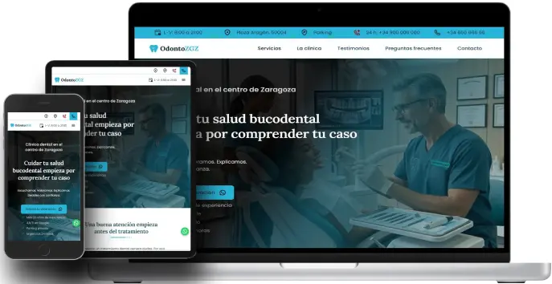

OdontoZGZ Sitio web corporativo para una clínica dental ficticia
- Tecnologías:
- HTML5
- CSS3
- JavaScript con apoyo de IA.
- Diseño responsive:Sí.
- Accesibilidad:Buenas prácticas aplicadas.
- SEO:SEO técnico básico.
Objetivos del proyecto
Partiendo del contexto de una clínica dental con amplia experiencia en Zaragoza y una página web desactualizada, el objetivo fue desarrollar un sitio web que permitiera:
- Modernizar la presencia digital.
- Transmitir confianza, seguridad y profesionalidad.
- Facilitar el acceso a la información mediante una navegación clara.
- Garantizar una experiencia accesible para el mayor número posible de personas.

Diseño y desarrollo de una página web corporativa para una clínica odontológica, orientada a claridad, confianza, seguridad y profesionalidad.
Ver sitio web de clínica dental (se abre en una nueva pestaña.)Identidad visual y tipografía
- Paleta de colores orientada para transmitir confianza, seguridad y cercanía.
- Lora y Roboto para equilibrar cercanía, elegancia y legibilidad.
- Diseño limpio y minimalista.
Navegación clara e intuitiva
- Jerarquía clara de contenidos.
- Acceso rápido a servicios
- Información de la clínica
- Testimonios
- Preguntas frecuentes
- Contacto
Testimonios y casos reales
- Testimonios de pacientes.
- Imágenes reales de antes y después (Resultados visibles).
Objetivo: aumentar la credibilidad y generar confianza antes del contacto.
Accesibilidad y usabilidad
- Contraste del color.
- Estructura semántica HTML.
- Validación mediante herramientas automáticas y pruebas manuales.
- Pruebas con lector de pantalla NVDA.
- Navegación mediante el teclado.
- Menú principal funcional con Javascript deshabilitado.
Herramientas de validación
- Lighthouse
- WAVE
- ARC Toolkit
- NVDA
- Contrast Checker
Resultado
- Sitio web corporativo claro, accesible y adaptable a distintos dispositivos.
- Navegación clara e intuitiva y estructura semántica.
- Diseño alineado con los valores de la clínica.
- Aplicación de buenas prácticas de accesibilidad web y SEO técnico.
- Mayor confianza gracias a los casos reales y testimonios.
- Menú funcional sin JavaScript.